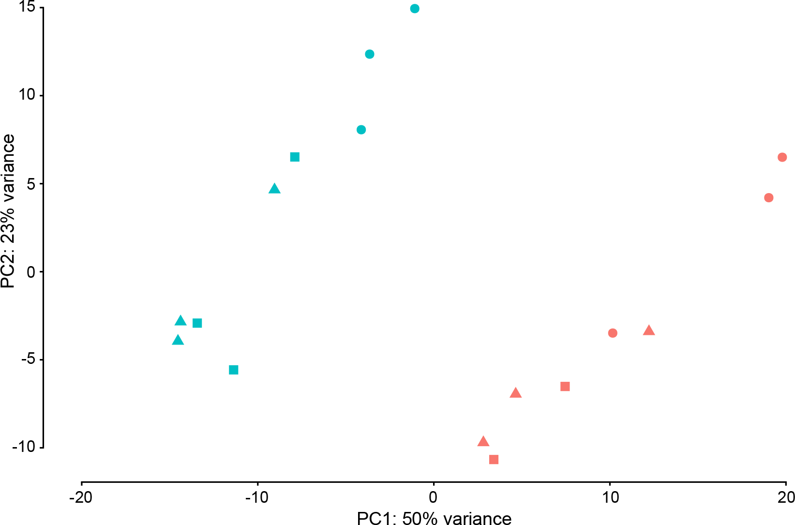

Genomics and Gene Regulation
The Genomics and Gene Regulation group at Yale-NUS is interested in understanding how gene expression is regulated during both development and in a disease context; with a focus on cancer.
We use a number of computational and statistical approaches to ask and answer questions about biological systems, often in close collaboration with experimental biologists. Our research interests encompass a variety of themes, including understanding how the 3D structure around important transcription factors influences genome evolution and identifying the genomic and epigenetic features that determine whether a gene is regulated by a specific developmental signalling pathway.
News
- October 2022: Combining stem cell rejuvenation and senescence targeting to synergistically extend lifespan is now published
- August 2022: A high-resolution map of human RNA translation is now published
- June 2022:A p300/GATA6 axis determines differentiation and Wnt dependency in pancreatic cancer models is now published
- June 2022:A non-canonical Raf function is required for dorsal–ventral patterning during Drosophila embryogenesis is now published
- April 2022: New preprint posted: Combining Stem Cell Rejuvenation and Senescence Targeting to Synergistically Extend Lifespan as part of a collaboration with the Tolwinski and Gruber labs at Yale-NUS
- April 2022: New review paper published - The importance of considering regulatory domains in genome-wide analyses – the nearest gene is often wrong!
- January 2022: Wnt Signaling Rescues Amyloid Beta-Induced Gut Stem Cell Loss now published
- September 2021: New preprint posted: Wnt signaling rescues amyloid beta induced stem cell loss as part of a collaboration with the Tolwinski lab at Yale-NUS
- August 2021: Glenda Chin joins the lab for her capstone project
- August 2021: Sara Haghani joins the lab as a Research Assistant
- July 2021: New preprint posted: A Non-Canonical Raf Function Is Required for Dorsal-Ventral Patterning During Drosophila Embryogenesis as part of a collaboration with the Tolwinski lab at Yale-NUS
- November 2020: Perspective on Regulation in common: Sponge to zebrafish now published in Science
- November 2020: Our poster on Analyses of mutational and structural variation in a cohort of anaplastic astrocytoma has been accepted at Frontiers in Cancer Science, Singapore 2020
- August 2020: Samen Yasar and Sara Haghani join the lab for their capstone projects
- October 2019: Ellora Chua joins the lab as a Research Assistant
- August 2019: Anjali Kannangath joins the lab for her capstone project
- August 2019: Nathan presents on TADs Are Ancient Features that Coincide with Metazoan Clusters of Noncoding Conservation at (GRC) Genome Architecture in Cell Fate and Disease, Hong Kong 2019
Contact
E-mail: nathan.harmston (at) yale-nus.edu.sg
Publications
You can find a current and complete list of publications on Google scholar.
 A high-resolution map of human RNA translation
(2022)
A high-resolution map of human RNA translation
(2022) [manuscript @ Molecular Cell ]
Sonia P Chothani, Eleonora Adami, Anissa A Widjaja, Sarah R Langley, Sivakumar Viswanathan, Chee Jian Pua, Nevin Tham Zhihao, Nathan Harmston, Giuseppe D’agostino, Nicola Whiffin, Wang Mao, John F Ouyang, Wei Wen Lim, Shiqi Lim, Cheryl QE Lee, Alexandra Grubman, Joseph Chen, JP Kovalik, Karl Tryggvason, Jose M Polo, Lena Ho, Stuart A Cook, Owen JL Rackham, Sebastian Schafer
 A p300/GATA6 axis determines differentiation and Wnt dependency in pancreatic cancer models (2022)
[manuscript @ The Journal of Clinical Investigation ]
Z Zhong, N Harmston, KC Wood, B Madan, DM Virshup
Combining Stem Cell Rejuvenation and Senescence Targeting to Synergistically Extend Lifespan (2022)
[manuscript @ Ageing ]
[Preprint]
[GitHub]
Prameet Kaur, Agimaa Otgonbaatar, Anupriya Ramamoorthy, Ellora Hui Zhen Chua, Nathan Harmston, Jan Gruber, Nicholas S. Tolwinski
The importance of considering regulatory domains in genome-wide analyses – the nearest gene is often wrong! (2022)
[manuscript @ Biology Open]
[Future leader to watch – Nathan Harmston]
[GitHub]
Ellora Hui Zhen Chua, Samen Yasar, Nathan Harmston
Wnt Signaling Rescues Amyloid Beta-Induced Gut Stem Cell Loss (2022)
[manuscript @ Cells]
[preprint]
[GitHub]
Prameet Kaur, Ellora Hui Zhen Chua, Wen Kin Lim, Nathan Harmston, Nicholas S. Tolwinski
A Non-Canonical Raf Function Is Required for Dorsal-Ventral Patterning During Drosophila Embryogenesis (2022)
[manuscript @ Scientific Reports ]
[preprint]
[GitHub]
Jay B. Lusk, Ellora Hui Zhen Chua, Prameet Kaur, Isabelle Chiao Han Sung, Wen Kin Lim, Vanessa Yuk Man Lam, Nathan Harmston, Nicholas S. Tolwinski
WNT inhibition creates a BRCA‐like state in Wnt‐addicted cancer (2021)
[manuscript @ EMBO Molecular Medicine]
Amanpreet Kaur, Jun Yi Stanley Lim, Sugunavathi Sepramaniam, Siddhi Patnaik, Nathan Harmston, May Ann Lee, Enrico Petretto, David M Virshup, Babita Madan
Widespread repression of gene expression in cancer by a Wnt/β-catenin/MAPK pathway (2021)
[manuscript @ Cancer Research]
Nathan Harmston, Jun Yi Stanley Lim, Oriol Arqués, Héctor G Palmer, Enrico Petretto, David M Virshup, Babita Madan
Regulation in common: Sponge to zebrafish (2020)
[Manuscript]
Nathan Harmston
Team

Nathan Harmston
Principal investigatorI am a computational biologist who leads the Genomics and Gene Regulation group at Yale-NUS.
Email: nathan.harmston@yale-nus.edu.sg